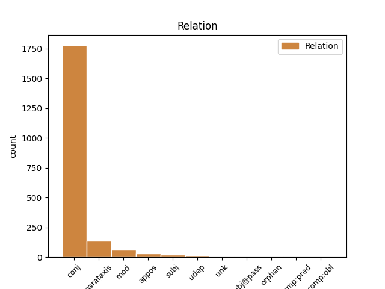
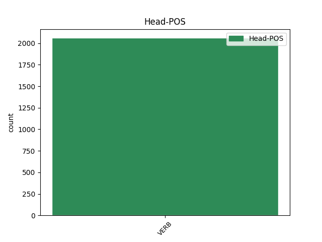
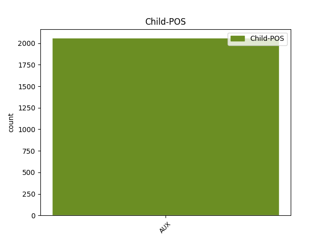

Distribution of features within this leaf



Agreement Rules sorted by frequency.
- When the dependent token is the conjunct(conj) of the head token, and the head token is VERB and the dependent token is AUX.
1 Ve _ _ _ _ 0 _ _ _
2 vzdálenosti _ _ _ _ 0 _ _ _
3 150 _ _ _ _ 0 _ _ _
4 miliónů _ _ _ _ 0 _ _ _
5 km _ _ _ _ 0 _ _ _
6 ( _ _ _ _ 0 _ _ _
7 ekvivalent _ _ _ _ 0 _ _ _
8 vzdálenosti _ _ _ _ 0 _ _ _
9 Slunce _ _ _ _ 0 _ _ _
10 - _ _ _ _ 0 _ _ _
11 Země _ _ _ _ 0 _ _ _
12 ) _ _ _ _ 0 _ _ _
13 stačí stačit VERB VB-S---3P-AA--- Aspect=Imp|Mood=Ind|Number=Sing|Person=3|Polarity=Pos|Tense=Pres|VerbForm=Fin|Voice=Act 0 _ _ _
14 na _ _ _ _ 0 _ _ _
15 udělení _ _ _ _ 0 _ _ _
16 postačující _ _ _ _ 0 _ _ _
17 příčné _ _ _ _ 0 _ _ _
18 složky _ _ _ _ 0 _ _ _
19 rychlosti _ _ _ _ 0 _ _ _
20 asi _ _ _ _ 0 _ _ _
21 1 _ _ _ _ 0 _ _ _
22 Mt _ _ _ _ 0 _ _ _
23 TNT _ _ _ _ 0 _ _ _
24 , _ _ _ _ 0 _ _ _
25 ale _ _ _ _ 0 _ _ _
26 k _ _ _ _ 0 _ _ _
27 tomu _ _ _ _ 0 _ _ _
28 je být AUX VB-S---3P-AA--- Mood=Ind|Number=Sing|Person=3|Polarity=Pos|Tense=Pres|VerbForm=Fin|Voice=Act 13 conj _ _
29 třeba _ _ _ _ 0 _ _ _
30 připočítat _ _ _ _ 0 _ _ _
31 další _ _ _ _ 0 _ _ _
32 nemalou _ _ _ _ 0 _ _ _
33 energii _ _ _ _ 0 _ _ _
34 potřebnou _ _ _ _ 0 _ _ _
35 pro _ _ _ _ 0 _ _ _
36 rozbití _ _ _ _ 0 _ _ _
37 planetky _ _ _ _ 0 _ _ _
38 či _ _ _ _ 0 _ _ _
39 jádra _ _ _ _ 0 _ _ _
40 komety _ _ _ _ 0 _ _ _
41 na _ _ _ _ 0 _ _ _
42 dva _ _ _ _ 0 _ _ _
43 kusy _ _ _ _ 0 _ _ _
44 . _ _ _ _ 0 _ _ _
1 Jestliže _ _ _ _ 0 _ _ _
2 se _ _ _ _ 0 _ _ _
3 takto _ _ _ _ 0 _ _ _
4 objeví _ _ _ _ 0 _ _ _
5 kosmický _ _ _ _ 0 _ _ _
6 objekt _ _ _ _ 0 _ _ _
7 mířící _ _ _ _ 0 _ _ _
8 k _ _ _ _ 0 _ _ _
9 Zemi _ _ _ _ 0 _ _ _
10 , _ _ _ _ 0 _ _ _
11 máme _ _ _ _ 0 _ _ _
12 asi _ _ _ _ 0 _ _ _
13 6 _ _ _ _ 0 _ _ _
14 týdnů _ _ _ _ 0 _ _ _
15 na _ _ _ _ 0 _ _ _
16 obranný _ _ _ _ 0 _ _ _
17 manévr _ _ _ _ 0 _ _ _
18 , _ _ _ _ 0 _ _ _
19 ale _ _ _ _ 0 _ _ _
20 potřebná _ _ _ _ 0 _ _ _
21 energie _ _ _ _ 0 _ _ _
22 bude _ _ _ _ 0 _ _ _
23 na _ _ _ _ 0 _ _ _
24 úrovni _ _ _ _ 0 _ _ _
25 100 _ _ _ _ 0 _ _ _
26 Mt _ _ _ _ 0 _ _ _
27 TNT _ _ _ _ 0 _ _ _
28 ( _ _ _ _ 0 _ _ _
29 dosud _ _ _ _ 0 _ _ _
30 nejsilnější _ _ _ _ 0 _ _ _
31 vodíkovou _ _ _ _ 0 _ _ _
32 bombu _ _ _ _ 0 _ _ _
33 vyvinuli vyvinout VERB VpMP---XR-AA--- Animacy=Anim|Gender=Masc|Number=Plur|Polarity=Pos|Tense=Past|VerbForm=Part|Voice=Act 0 _ _ _
34 sovětští _ _ _ _ 0 _ _ _
35 odborníci _ _ _ _ 0 _ _ _
36 - _ _ _ _ 0 _ _ _
37 její _ _ _ _ 0 _ _ _
38 ničivá _ _ _ _ 0 _ _ _
39 síla _ _ _ _ 0 _ _ _
40 byla být AUX VpQW---XR-AA--- Gender=Fem,Neut|Number=Plur,Sing|Polarity=Pos|Tense=Past|VerbForm=Part|Voice=Act 33 parataxis _ _
41 " _ _ _ _ 0 _ _ _
42 jen _ _ _ _ 0 _ _ _
43 " _ _ _ _ 0 _ _ _
44 60 _ _ _ _ 0 _ _ _
45 Mt _ _ _ _ 0 _ _ _
46 TNT _ _ _ _ 0 _ _ _
47 ) _ _ _ _ 0 _ _ _
48 . _ _ _ _ 0 _ _ _
1 Když _ _ _ _ 0 _ _ _
2 se _ _ _ _ 0 _ _ _
3 vrátil _ _ _ _ 0 _ _ _
4 , _ _ _ _ 0 _ _ _
5 strnul strnout VERB VpYS---XR-AA--- Gender=Masc|Number=Sing|Polarity=Pos|Tense=Past|VerbForm=Part|Voice=Act 0 _ _ _
6 : _ _ _ _ 0 _ _ _
7 průběh _ _ _ _ 0 _ _ _
8 opakované _ _ _ _ 0 _ _ _
9 části _ _ _ _ 0 _ _ _
10 křivky _ _ _ _ 0 _ _ _
11 byl být AUX VpYS---XR-AA--- Gender=Masc|Number=Sing|Polarity=Pos|Tense=Past|VerbForm=Part|Voice=Act 5 mod _ _
12 sice _ _ _ _ 0 _ _ _
13 z _ _ _ _ 0 _ _ _
14 počátku _ _ _ _ 0 _ _ _
15 k _ _ _ _ 0 _ _ _
16 nerozeznání _ _ _ _ 0 _ _ _
17 stejný _ _ _ _ 0 _ _ _
18 s _ _ _ _ 0 _ _ _
19 předchozím _ _ _ _ 0 _ _ _
20 během _ _ _ _ 0 _ _ _
21 , _ _ _ _ 0 _ _ _
22 posléze _ _ _ _ 0 _ _ _
23 se _ _ _ _ 0 _ _ _
24 však _ _ _ _ 0 _ _ _
25 začal _ _ _ _ 0 _ _ _
26 - _ _ _ _ 0 _ _ _
27 zprvu _ _ _ _ 0 _ _ _
28 zcela _ _ _ _ 0 _ _ _
29 nepatrně _ _ _ _ 0 _ _ _
30 - _ _ _ _ 0 _ _ _
31 odchylovat _ _ _ _ 0 _ _ _
32 , _ _ _ _ 0 _ _ _
33 až _ _ _ _ 0 _ _ _
34 nakonec _ _ _ _ 0 _ _ _
35 byl _ _ _ _ 0 _ _ _
36 výsledný _ _ _ _ 0 _ _ _
37 průběh _ _ _ _ 0 _ _ _
38 - _ _ _ _ 0 _ _ _
39 vývoj _ _ _ _ 0 _ _ _
40 simulovaného _ _ _ _ 0 _ _ _
41 počasí _ _ _ _ 0 _ _ _
42 - _ _ _ _ 0 _ _ _
43 naprosto _ _ _ _ 0 _ _ _
44 rozdílný _ _ _ _ 0 _ _ _
45 . _ _ _ _ 0 _ _ _
1 ( _ _ _ _ 0 _ _ _
2 Výraz _ _ _ _ 0 _ _ _
3 smysl _ _ _ _ 0 _ _ _
4 používám _ _ _ _ 0 _ _ _
5 v _ _ _ _ 0 _ _ _
6 tom _ _ _ _ 0 _ _ _
7 významu _ _ _ _ 0 _ _ _
8 , _ _ _ _ 0 _ _ _
9 že _ _ _ _ 0 _ _ _
10 jazykový _ _ _ _ 0 _ _ _
11 výraz _ _ _ _ 0 _ _ _
12 má mít VERB VB-S---3P-AA--- Mood=Ind|Number=Sing|Person=3|Polarity=Pos|Tense=Pres|VerbForm=Fin|Voice=Act 0 _ _ _
13 význam _ _ _ _ 0 _ _ _
14 , _ _ _ _ 0 _ _ _
15 což _ _ _ _ 0 _ _ _
16 je být AUX VB-S---3P-AA--- Mood=Ind|Number=Sing|Person=3|Polarity=Pos|Tense=Pres|VerbForm=Fin|Voice=Act 12 appos _ _
17 jeho _ _ _ _ 0 _ _ _
18 smysl _ _ _ _ 0 _ _ _
19 nebo _ _ _ _ 0 _ _ _
20 jeho _ _ _ _ 0 _ _ _
21 denotát _ _ _ _ 0 _ _ _
22 , _ _ _ _ 0 _ _ _
23 popřípadě _ _ _ _ 0 _ _ _
24 obojí _ _ _ _ 0 _ _ _
25 . _ _ _ _ 0 _ _ _
26 ) _ _ _ _ 0 _ _ _
1 Prostě _ _ _ _ 0 _ _ _
2 co _ _ _ _ 0 _ _ _
3 je být AUX VB-S---3P-AA--- Mood=Ind|Number=Sing|Person=3|Polarity=Pos|Tense=Pres|VerbForm=Fin|Voice=Act 7 subj _ _
4 zřejmé _ _ _ _ 0 _ _ _
5 přírodovědci _ _ _ _ 0 _ _ _
6 , _ _ _ _ 0 _ _ _
7 nemusí muset VERB VB-S---3P-NA--- Mood=Ind|Number=Sing|Person=3|Polarity=Neg|Tense=Pres|VerbForm=Fin|Voice=Act 0 _ _ _
8 být _ _ _ _ 0 _ _ _
9 zřejmé _ _ _ _ 0 _ _ _
10 historikovi _ _ _ _ 0 _ _ _
11 . _ _ _ _ 0 _ _ _
1 " _ _ _ _ 0 _ _ _
2 Privatizační _ _ _ _ 0 _ _ _
3 projekt _ _ _ _ 0 _ _ _
4 na _ _ _ _ 0 _ _ _
5 Knižní _ _ _ _ 0 _ _ _
6 velkoobchod _ _ _ _ 0 _ _ _
7 byl být AUX VpYS---XR-AA--- Gender=Masc|Number=Sing|Polarity=Pos|Tense=Past|VerbForm=Part|Voice=Act 35 udep _ _
8 vypracován _ _ _ _ 0 _ _ _
9 na _ _ _ _ 0 _ _ _
10 přelomu _ _ _ _ 0 _ _ _
11 let _ _ _ _ 0 _ _ _
12 1991 _ _ _ _ 0 _ _ _
13 a _ _ _ _ 0 _ _ _
14 1992 _ _ _ _ 0 _ _ _
15 a _ _ _ _ 0 _ _ _
16 předložen _ _ _ _ 0 _ _ _
17 v _ _ _ _ 0 _ _ _
18 únoru _ _ _ _ 0 _ _ _
19 1992 _ _ _ _ 0 _ _ _
20 , _ _ _ _ 0 _ _ _
21 kdy _ _ _ _ 0 _ _ _
22 jsem _ _ _ _ 0 _ _ _
23 nemohl _ _ _ _ 0 _ _ _
24 tušit _ _ _ _ 0 _ _ _
25 , _ _ _ _ 0 _ _ _
26 že _ _ _ _ 0 _ _ _
27 budu _ _ _ _ 0 _ _ _
28 v _ _ _ _ 0 _ _ _
29 budoucnu _ _ _ _ 0 _ _ _
30 jmenován _ _ _ _ 0 _ _ _
31 místopředsedou _ _ _ _ 0 _ _ _
32 vlády _ _ _ _ 0 _ _ _
33 , _ _ _ _ 0 _ _ _
34 " _ _ _ _ 0 _ _ _
35 upřesnil upřesnit VERB VpYS---XR-AA--- Aspect=Perf|Gender=Masc|Number=Sing|Polarity=Pos|Tense=Past|VerbForm=Part|Voice=Act 0 _ _ _
36 . _ _ _ _ 0 _ _ _
1 Je _ _ _ _ 0 _ _ _
2 však _ _ _ _ 0 _ _ _
3 logické _ _ _ _ 0 _ _ _
4 , _ _ _ _ 0 _ _ _
5 že _ _ _ _ 0 _ _ _
6 čím _ _ _ _ 0 _ _ _
7 více _ _ _ _ 0 _ _ _
8 se _ _ _ _ 0 _ _ _
9 bude být AUX VB-S---3F-AA--- Mood=Ind|Number=Sing|Person=3|Polarity=Pos|Tense=Fut|VerbForm=Fin|Voice=Act 15 unk _ _
10 blížit _ _ _ _ 0 _ _ _
11 termín _ _ _ _ 0 _ _ _
12 mistrovství _ _ _ _ 0 _ _ _
13 světa _ _ _ _ 0 _ _ _
14 , _ _ _ _ 0 _ _ _
15 bude být VERB VB-S---3F-AA--- Mood=Ind|Number=Sing|Person=3|Polarity=Pos|Tense=Fut|VerbForm=Fin|Voice=Act 0 _ _ _
16 v _ _ _ _ 0 _ _ _
17 našem _ _ _ _ 0 _ _ _
18 , _ _ _ _ 0 _ _ _
19 ale _ _ _ _ 0 _ _ _
20 určitě _ _ _ _ 0 _ _ _
21 i _ _ _ _ 0 _ _ _
22 v _ _ _ _ 0 _ _ _
23 českém _ _ _ _ 0 _ _ _
24 týmu _ _ _ _ 0 _ _ _
25 hráčů _ _ _ _ 0 _ _ _
26 z _ _ _ _ 0 _ _ _
27 domácích _ _ _ _ 0 _ _ _
28 soutěží _ _ _ _ 0 _ _ _
29 ubývat _ _ _ _ 0 _ _ _
30 . _ _ _ _ 0 _ _ _
1 VE _ _ _ _ 0 _ _ _
2 STŘEDNÍ _ _ _ _ 0 _ _ _
3 ASII _ _ _ _ 0 _ _ _
4 SE _ _ _ _ 0 _ _ _
5 JEN _ _ _ _ 0 _ _ _
6 TĚŽKO _ _ _ _ 0 _ _ _
7 POZNÁ poznat VERB VB-S---3P-AA--- Aspect=Perf|Mood=Ind|Number=Sing|Person=3|Polarity=Pos|Tense=Pres|VerbForm=Fin|Voice=Act 0 _ _ _
8 , _ _ _ _ 0 _ _ _
9 KDO _ _ _ _ 0 _ _ _
10 JE být AUX VB-S---3P-AA--- Mood=Ind|Number=Sing|Person=3|Polarity=Pos|Tense=Pres|VerbForm=Fin|Voice=Act 7 subj@pass _ _
11 KDO _ _ _ _ 0 _ _ _
1 Samozřejmě _ _ _ _ 0 _ _ _
2 že _ _ _ _ 0 _ _ _
3 se _ _ _ _ 0 _ _ _
4 budoucnost _ _ _ _ 0 _ _ _
5 naplánovat _ _ _ _ 0 _ _ _
6 nedá dát VERB VB-S---3P-NA--- Mood=Ind|Number=Sing|Person=3|Polarity=Neg|Tense=Pres|VerbForm=Fin|Voice=Act 0 _ _ _
7 , _ _ _ _ 0 _ _ _
8 ale _ _ _ _ 0 _ _ _
9 je být AUX VB-S---3P-AA--- Mood=Ind|Number=Sing|Person=3|Polarity=Pos|Tense=Pres|VerbForm=Fin|Voice=Act 6 orphan _ _
10 třeba _ _ _ _ 0 _ _ _
11 na _ _ _ _ 0 _ _ _
12 ni _ _ _ _ 0 _ _ _
13 myslet _ _ _ _ 0 _ _ _
14 a _ _ _ _ 0 _ _ _
15 také _ _ _ _ 0 _ _ _
16 o _ _ _ _ 0 _ _ _
17 ní _ _ _ _ 0 _ _ _
18 mluvit _ _ _ _ 0 _ _ _
19 . _ _ _ _ 0 _ _ _
1 Jsouce být AUX VeXP------A---- Aspect=Imp|Number=Plur|Polarity=Pos|Tense=Pres|VerbForm=Conv|Voice=Act 14 comp:pred _ _
2 svědky _ _ _ _ 0 _ _ _
3 řady _ _ _ _ 0 _ _ _
4 pozoruhodných _ _ _ _ 0 _ _ _
5 dialogů _ _ _ _ 0 _ _ _
6 i _ _ _ _ 0 _ _ _
7 monologů _ _ _ _ 0 _ _ _
8 , _ _ _ _ 0 _ _ _
9 jsouce _ _ _ _ 0 _ _ _
10 čtenáři _ _ _ _ 0 _ _ _
11 pozoruhodných _ _ _ _ 0 _ _ _
12 pamětí _ _ _ _ 0 _ _ _
13 , _ _ _ _ 0 _ _ _
14 můžeme moci VERB VB-P---1P-AA--- Mood=Ind|Number=Plur|Person=1|Polarity=Pos|Tense=Pres|VerbForm=Fin|Voice=Act 0 _ _ _
15 naskicovat _ _ _ _ 0 _ _ _
16 , _ _ _ _ 0 _ _ _
17 jak _ _ _ _ 0 _ _ _
18 takový _ _ _ _ 0 _ _ _
19 příběh _ _ _ _ 0 _ _ _
20 opravdového _ _ _ _ 0 _ _ _
21 člověka _ _ _ _ 0 _ _ _
22 vypadá _ _ _ _ 0 _ _ _
23 . _ _ _ _ 0 _ _ _
Disagree Examples:
1 Změnily změnit VERB VpTP---XR-AA--- Animacy=Inan|Aspect=Perf|Gender=Fem,Masc|Number=Plur|Polarity=Pos|Tense=Past|VerbForm=Part|Voice=Act 0 _ _ _
2 se _ _ _ _ 0 _ _ _
3 podmínky _ _ _ _ 0 _ _ _
4 splácení _ _ _ _ 0 _ _ _
5 dluhu _ _ _ _ 0 _ _ _
6 a _ _ _ _ 0 _ _ _
7 také _ _ _ _ 0 _ _ _
8 jsme být AUX VB-P---1P-AA--- Mood=Ind|Number=Plur|Person=1|Polarity=Pos|Tense=Pres|VerbForm=Fin|Voice=Act 1 conj _ _
9 získali _ _ _ _ 0 _ _ _
10 nové _ _ _ _ 0 _ _ _
11 finanční _ _ _ _ 0 _ _ _
12 prostředky _ _ _ _ 0 _ _ _
13 . _ _ _ _ 0 _ _ _
1 Druhým _ _ _ _ 0 _ _ _
2 důvodem _ _ _ _ 0 _ _ _
3 je _ _ _ _ 0 _ _ _
4 naše _ _ _ _ 0 _ _ _
5 přesvědčení _ _ _ _ 0 _ _ _
6 , _ _ _ _ 0 _ _ _
7 že _ _ _ _ 0 _ _ _
8 výkon _ _ _ _ 0 _ _ _
9 podniku _ _ _ _ 0 _ _ _
10 , _ _ _ _ 0 _ _ _
11 především _ _ _ _ 0 _ _ _
12 cash _ _ _ _ 0 _ _ _
13 flow _ _ _ _ 0 _ _ _
14 se _ _ _ _ 0 _ _ _
15 musí muset VERB VB-S---3P-AA--- Mood=Ind|Number=Sing|Person=3|Polarity=Pos|Tense=Pres|VerbForm=Fin|Voice=Act 0 _ _ _
16 zlepšit _ _ _ _ 0 _ _ _
17 , _ _ _ _ 0 _ _ _
18 a _ _ _ _ 0 _ _ _
19 teprve _ _ _ _ 0 _ _ _
20 potom _ _ _ _ 0 _ _ _
21 bude být AUX VB-S---3F-AA--- Mood=Ind|Number=Sing|Person=3|Polarity=Pos|Tense=Fut|VerbForm=Fin|Voice=Act 15 conj _ _
22 celá _ _ _ _ 0 _ _ _
23 věc _ _ _ _ 0 _ _ _
24 zajímavá _ _ _ _ 0 _ _ _
25 pro _ _ _ _ 0 _ _ _
26 zahraniční _ _ _ _ 0 _ _ _
27 banky _ _ _ _ 0 _ _ _
28 . _ _ _ _ 0 _ _ _
1 Řekl _ _ _ _ 0 _ _ _
2 jsem _ _ _ _ 0 _ _ _
3 , _ _ _ _ 0 _ _ _
4 ať _ _ _ _ 0 _ _ _
5 používají používat VERB VB-P---3P-AA--- Aspect=Imp|Mood=Ind|Number=Plur|Person=3|Polarity=Pos|Tense=Pres|VerbForm=Fin|Voice=Act 0 _ _ _
6 vozidla _ _ _ _ 0 _ _ _
7 za _ _ _ _ 0 _ _ _
8 stejných _ _ _ _ 0 _ _ _
9 podmínek _ _ _ _ 0 _ _ _
10 , _ _ _ _ 0 _ _ _
11 a _ _ _ _ 0 _ _ _
12 teprve _ _ _ _ 0 _ _ _
13 pak _ _ _ _ 0 _ _ _
14 bude být AUX VB-S---3F-AA--- Mood=Ind|Number=Sing|Person=3|Polarity=Pos|Tense=Fut|VerbForm=Fin|Voice=Act 5 conj _ _
15 možné _ _ _ _ 0 _ _ _
16 hovořit _ _ _ _ 0 _ _ _
17 o _ _ _ _ 0 _ _ _
18 objektivním _ _ _ _ 0 _ _ _
19 srovnání _ _ _ _ 0 _ _ _
20 . _ _ _ _ 0 _ _ _
1 Škoda _ _ _ _ 0 _ _ _
2 na _ _ _ _ 0 _ _ _
3 západoevropském _ _ _ _ 0 _ _ _
4 trhu _ _ _ _ 0 _ _ _
5 prodala prodat VERB VpQW---XR-AA--- Aspect=Perf|Gender=Fem,Neut|Number=Plur,Sing|Polarity=Pos|Tense=Past|VerbForm=Part|Voice=Act 0 _ _ _
6 48000 _ _ _ _ 0 _ _ _
7 aut _ _ _ _ 0 _ _ _
8 , _ _ _ _ 0 _ _ _
9 ale _ _ _ _ 0 _ _ _
10 to _ _ _ _ 0 _ _ _
11 je být AUX VB-S---3P-AA--- Mood=Ind|Number=Sing|Person=3|Polarity=Pos|Tense=Pres|VerbForm=Fin|Voice=Act 5 conj _ _
12 také _ _ _ _ 0 _ _ _
13 absolutně _ _ _ _ 0 _ _ _
14 nejméně _ _ _ _ 0 _ _ _
15 ve _ _ _ _ 0 _ _ _
16 srovnání _ _ _ _ 0 _ _ _
17 s _ _ _ _ 0 _ _ _
18 ostatními _ _ _ _ 0 _ _ _
19 . _ _ _ _ 0 _ _ _
1 Změnila _ _ _ _ 0 _ _ _
2 se _ _ _ _ 0 _ _ _
3 povinnost _ _ _ _ 0 _ _ _
4 plátce _ _ _ _ 0 _ _ _
5 ohledně _ _ _ _ 0 _ _ _
6 vystavování _ _ _ _ 0 _ _ _
7 daňových _ _ _ _ 0 _ _ _
8 dokladů _ _ _ _ 0 _ _ _
9 , _ _ _ _ 0 _ _ _
10 použití _ _ _ _ 0 _ _ _
11 určitých _ _ _ _ 0 _ _ _
12 výrobků _ _ _ _ 0 _ _ _
13 k _ _ _ _ 0 _ _ _
14 nepodnikatelským _ _ _ _ 0 _ _ _
15 činnostem _ _ _ _ 0 _ _ _
16 , _ _ _ _ 0 _ _ _
17 změnil změnit VERB VpYS---XR-AA--- Aspect=Perf|Gender=Masc|Number=Sing|Polarity=Pos|Tense=Past|VerbForm=Part|Voice=Act 0 _ _ _
18 se _ _ _ _ 0 _ _ _
19 termín _ _ _ _ 0 _ _ _
20 předkládání _ _ _ _ 0 _ _ _
21 daňových _ _ _ _ 0 _ _ _
22 přiznání _ _ _ _ 0 _ _ _
23 na _ _ _ _ 0 _ _ _
24 25 _ _ _ _ 0 _ _ _
25 dnů _ _ _ _ 0 _ _ _
26 , _ _ _ _ 0 _ _ _
27 je být AUX VB-S---3P-AA--- Mood=Ind|Number=Sing|Person=3|Polarity=Pos|Tense=Pres|VerbForm=Fin|Voice=Act 17 conj _ _
28 změněna _ _ _ _ 0 _ _ _
29 ve _ _ _ _ 0 _ _ _
30 vracení _ _ _ _ 0 _ _ _
31 daně _ _ _ _ 0 _ _ _
32 , _ _ _ _ 0 _ _ _
33 upřesněno _ _ _ _ 0 _ _ _
34 zdaňovací _ _ _ _ 0 _ _ _
35 období _ _ _ _ 0 _ _ _
36 , _ _ _ _ 0 _ _ _
37 odvod _ _ _ _ 0 _ _ _
38 , _ _ _ _ 0 _ _ _
39 splatnost _ _ _ _ 0 _ _ _
40 , _ _ _ _ 0 _ _ _
41 zálohové _ _ _ _ 0 _ _ _
42 vracení _ _ _ _ 0 _ _ _
43 , _ _ _ _ 0 _ _ _
44 registrace _ _ _ _ 0 _ _ _
45 , _ _ _ _ 0 _ _ _
46 oznamovací _ _ _ _ 0 _ _ _
47 povinnost _ _ _ _ 0 _ _ _
48 , _ _ _ _ 0 _ _ _
49 penále _ _ _ _ 0 _ _ _
50 , _ _ _ _ 0 _ _ _
51 pokuty _ _ _ _ 0 _ _ _
52 atd _ _ _ _ 0 _ _ _
53 . _ _ _ _ 0 _ _ _